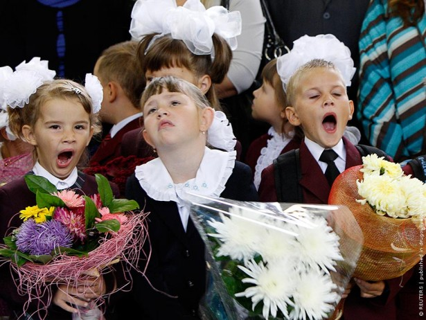
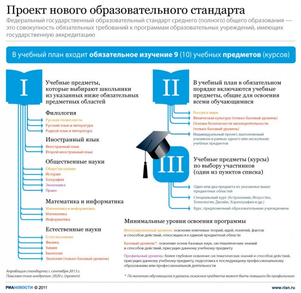

На прошлой неделе министерство образования и науки Российской Федерации представило обновлённый проект федерального государственного образовательного стандарта.
Планируется, что апробация стандарта в отдельных учебных заведениях начнётся с сентября 2013 года, а к 2020 году стандарт будет действовать во всех школах России.
В интернете и многих СМИ обсуждение нововведений в большинстве случаев сводится к следующим тезисам: «Школьное образование будет платным, «Россия в опасности», «Вводить подобные стандарты — преступление против государства», «Нужно уезжать», «Государство нас опять обворовывает», «Им нужно, чтобы народ стал быдлом», «Вот до чего довела страну «Единая Россия». Подобные высказывания без намёка на анализ ситуации звучат почти по каждому новостному поводу. Исключением можно назвать разве что раздачу денег после рождения второго ребёнка.

На мой взгляд, данный стандарт — лучшее, что можно сделать сейчас для средней российской средней школы, в которой дети хорошо учатся разве что жизни по расписанию. Реакция людей у которых отбирают что-то бесплатное в общем-то понятна. Правда это «бесплатное» людям в основном совершенно не нужно. Количество знаний стремящееся к отметке 100% забудется за ненадобностью выпускником уже через 3-4 года после выхода за ворота школы.
Согласно проекту образовательного стандарта нововведений планируется сразу несколько.

Количество предметов, изучаемых изучаемых школьниками планируется сократить до 9-10, то есть вдвое.
Обязательными станут только три предмета: это физкультура, ОБЖ и Россия в мире. На мой взгляд наиболее логичный выбор. Первый предмет поможет сделать российскую молодежь здоровой, второй, поможет здоровье не растерять.
Правда в случае с ОБЖ, придётся кардинально менять методику его преподавания. ОБЖ в школах чем-то похоже сегодня на информатику. Мало кто в школе знает зачем это, преподают случайные люди. Знаний никаких нет. Кое-где вместо ОБЖ вовсе преподают скорректированный курс общей военной подготовки (надеюсь хот противогазы на одевают на время)
Не очень уверен по поводу курса «Россия в мире» мне верится, что границы государств должны со временем исчезнуть окончательно, но надеюсь, что предмет не будет заключаться в изучении только России.
Четвёртым обязательным «предметом» станет так называемый «индивидуальный проект». Планируется, что школьник будет работать над ним в рамках одного или сразу нескольких предметов. Сама по себе идея неплоха, но пока не очень понимаю как будет построена работа в школе над эти проектом. Жаль будет если всё сведется к написанию никому не нужной «курсовой» к концу года.
Оставшиеся 6 предметов ученик будет выбирать самостоятельно и с помощью родителей из списка. Всего в списке выделено 6 предметных групп. Первая группа — это русский язык и литература, а также родной язык и литература, вторая группа — иностранные языки, третья — математика и информатика, четвертая — общественные науки, пятая — естественные науки, шестая — искусство или предмет по выбору. Планируется что ученики выберут по 1-2 предмета из каждой группы.
Уровень изучения предметов из дополнительного списка тоже можно будет выбирать. Вводятся 3 уровня изучения:
Интегрированный уровень ориентирован на освоение обучающимися ключевых теорий, идей, понятий, фактов и способов действий. Другими словами предмет будет изучаться поверхностно.
Базовый уровень должен уже будет ориентирован на «освоение обучающимися систематических знаний и способов действий, присущих данному учебному предмету».
Профильный уровень будет направлен на подготовку к последующему профессиональному образованию или профессиональной деятельности.
В школьном аттестате сегодня можно смело писать:
Сергей Иванов
Предмет (прослушано часов)
Неорганическая химия (150 часов)
Алгебра и начала анализа (100 часов)
История древнего мира (50 часов)
…
Смысл оценок в аттестате исчез с введением ЕГЭ. Аттестат где вписаны только прослушанные часы будет честным аттестатом.
Наряду с этим по-настоящему необходимые для жизни и профессиональной карьеры знания и навыки уже давно приобретаются либо в профессиональных училищах либо вузах (думаю нечасто) либо на специальных курсах (вроде курсов иностранных языков).
За бесплатное образование приходится платить своим временем. А ведь только время по-настоящему бесценно. Хотя может быть сейчас нет других вариантов куда его деть?